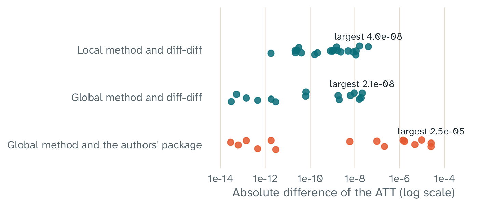
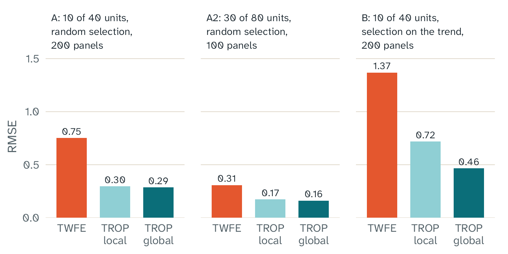
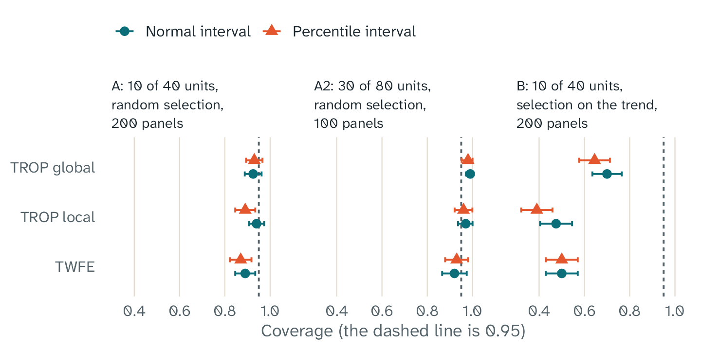

Key points
- On four small test panels with fixed tuning parameters, the ATTs of
fasttrop and of the Python package
diff-diffdiffer by at most 4e-8. - The difference from the Python package of the authors is larger, but it is still less than 3e-5. It comes from the less accurate solver of that package.
- With each change to the code, 472 test expectations run on six platforms.
- In simulations with a known effect, TROP had an error 44% to 62% smaller than the error of TWFE. This result is for a random selection of the treated units.
- In a simulation that selected treated units with large trends, TROP reduced the bias, but some bias stayed.
We checked fasttrop in three ways. First, we compared its results with other implementations of TROP. Second, tests examine the tuning and the bootstrap. Third, simulations with a known effect show how well the estimates and the intervals work.
Agreement with other implementations
When two independent programs give the same numbers, an error in one of them is less likely. We compared fasttrop with two reference implementations at fixed versions:
- The Python package
diff-diffhas the local method and the global method. - The Python package
tropfrom the authors of the paper has the global method for a block design.
The comparison used four small test panels and five sets of fixed tuning parameters. The sets include TWFE, weighted TWFE, matrix completion, and two sets for the full TROP estimator. One panel has a staggered design, so it has no global estimate.

The absolute difference between the ATT of fasttrop and the ATT of each reference implementation. Each dot is one test panel with one set of tuning parameters. The axis has a log scale.
| Comparison | Largest difference |
|---|---|
Local ATT, fasttrop and diff-diff
|
4.0e-8 |
Local effect for each cell, fasttrop and diff-diff
|
1.1e-7 |
Global ATT, fasttrop and diff-diff
|
2.1e-8 |
| Global ATT, fasttrop and the authors’ package | 2.5e-5 |
Objective value with the same weights, relative to
diff-diff
|
7e-15 |
A difference of 4e-8 means that the two numbers agree in the first 7 decimal places. The difference from the authors’ package is equal to the difference between the two reference implementations. The cause is the lower accuracy of the conic solver in that package. Without the low-rank term, the difference is 3e-12 or less.
The last row of the table uses the same weights in both programs. Then both programs find the same best fit, to the limit of the computer arithmetic.
Tests of the tuning and the bootstrap
The test suite examines the parts of fasttrop that the comparison above does not examine:
- The leave-one-out criterion does not use a cell in its own fit or in its own unit distances.
- The placebo criterion of the global method is the error of the placebo estimates.
- Each bootstrap draw is equal to a new estimate on the resampled panel. fasttrop keeps the selected tuning parameters fixed in each draw. Algorithm 3 of the paper gives the resampling, but it does not say whether to select the tuning parameters again.
- The weights of the local method are equal to an independent R calculation of the formula in the paper.
- With
lambda = c(time = 0, unit = 0, nn = Inf), the result is equal to imputation with TWFE. - The number of threads does not change the results. With a seed, the results are the same in each run.
The test suite has 472 expectations. GitHub Actions runs it with
R CMD check --as-cran on six platforms: Linux with four
versions of R, macOS, and Windows.
Simulations with a known effect
A simulation makes many panels with a known effect. Then it measures how near the estimates are to the truth. We used three simulations. Simulations A and B have 200 panels each, and simulation A2 has 100 panels.
In each panel, the true effect is 1 for each treated cell. The untreated outcomes have unit effects, period effects, a factor with a linear trend, a second factor, and noise. All treated units start the treatment in the same period.
| Simulation | Panels | Units | Treated units | Periods | Treated periods | Selection of the treated units |
|---|---|---|---|---|---|---|
| A | 200 | 40 | 10 | 16 | 4 | A random draw |
| A2 | 100 | 80 | 30 | 12 | 3 | A random draw |
| B | 200 | 40 | 10 | 16 | 4 | A draw that favors the units with the largest trends |
We compared three estimators:
- TWFE.
- The local method of TROP, with the leave-one-out criterion on 80 sampled cells.
- The global method of TROP, with placebo cross-validation on 50 sets.
The tuning grid had four values for each parameter. All three estimators used the same panels. The bootstrap used 200 draws for TWFE and for the global method, and 100 draws for the local method.

The root mean square error (RMSE) of each estimator in each simulation. A smaller RMSE is better.
With a random selection of the treated units (simulations A and A2), all three estimators have small biases. The RMSE of TROP is 44% to 62% less than the RMSE of TWFE. Thus, on average, TROP gives estimates that are nearer to the truth. In simulation A, the local method was nearer to the truth than TWFE in 170 of 200 panels.
In simulation B, the selection favors the units with the largest trends. TWFE has a large bias. TROP removes approximately half of this bias with the local method and two thirds with the global method, but some bias stays. The article What TROP can and cannot do explains why.

The coverage of the 95% intervals: the share of panels in which the interval contains the true effect. The dashed line is the target of 95%. The bars show two Monte Carlo standard errors.
For TROP, the coverage of the normal interval is near 95% in simulations A and A2. With 100 draws, the percentile interval of the local method has a coverage of only 89% in simulation A. For this reason, the normal interval is the default. In simulation A2, the global interval has a coverage of 99%, so it is wider than necessary. In simulation B, the bias makes the coverage of all intervals too low.
The scripts and the data
The package contains the scripts and the results, so you can run the checks again. We ran the simulation scripts and the comparison scripts only on Windows. GitHub Actions runs the test suite on Linux, macOS, and Windows.
- The folder
inst/validationof the source package has the simulation scripts and the comparison report. In an installed package, usesystem.file("validation", package = "fasttrop")to find it. - The folder
tests/testthathas the test suite and the reference results. - The script
data-raw/oracle_fixtures.pyin the GitHub repository made the reference results.